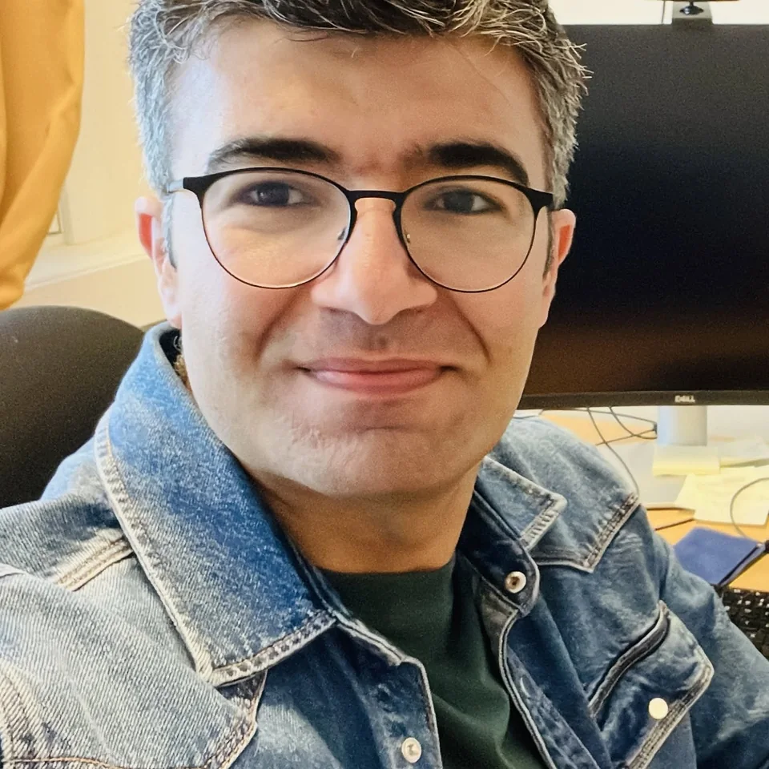

At NGU, I combine regional InSAR services with site-specific investigations of unstable slopes and climate-sensitive terrain. I contribute to InSAR Norway and InSAR Svalbard, integrate satellite measurements with geological and ground-based evidence, and develop tools that strengthen the use of InSAR in slope-process analysis.
Focus Unstable slopes · Rock glaciers and permafrost · Ground-motion services · ITASAbout

Gökhan Aslan, PhD
Research Scientist · Geological Survey of Norway (NGU)
I investigate unstable slopes and other ground-deformation processes using InSAR, terrain analysis, and complementary observations. My current work focuses on landslides, rock glaciers, permafrost-related motion, and climate-sensitive slope processes within their geological and hydrometeorological context.
My broader research includes subsidence and tectonic deformation. I also develop scientific software to support the interpretation of InSAR observations, geohazard assessment, and operational ground-motion monitoring.
My postdoctoral research focused on systematic landslide mapping and monitoring across the European Alps and Pyrenees using persistent-scatterer interferometry and satellite radar time series.
Focus InSAR time series · Landslide inventories · Alps & PyreneesDuring my joint PhD, I conducted research at the Eurasia Institute of Earth Sciences, Istanbul Technical University, and at ISTerre, Université Grenoble Alpes. I combined high-resolution InSAR and GNSS observations to investigate ground deformation in northwestern Türkiye, with a focus on aseismic fault creep and land subsidence.
Focus High-resolution InSAR · GNSS · Fault creep · Land subsidence